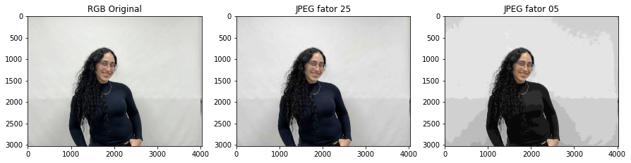
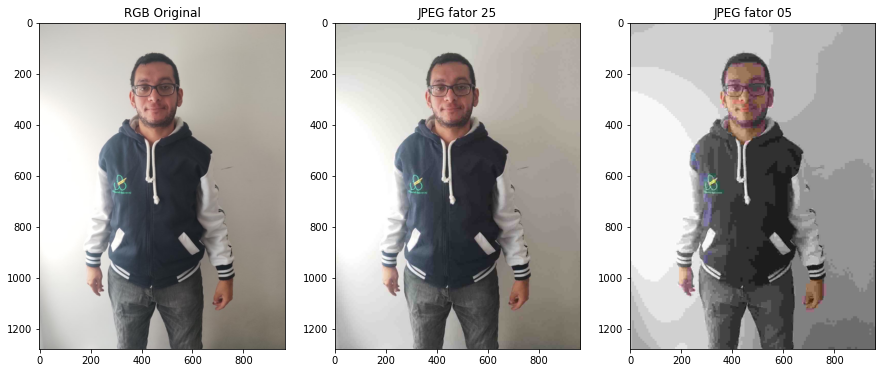
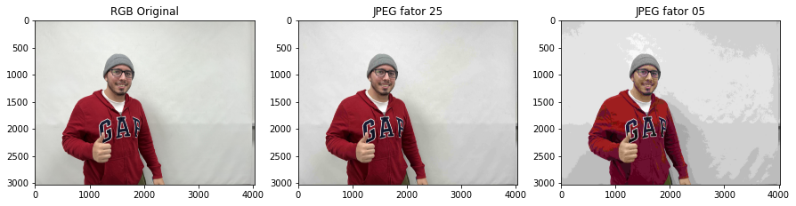
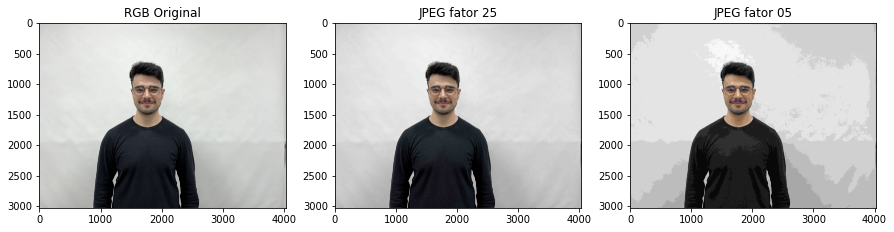
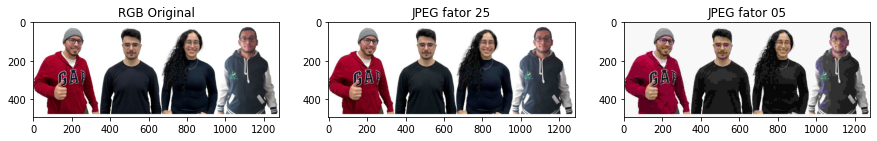
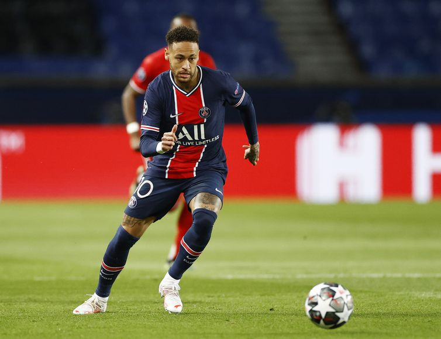
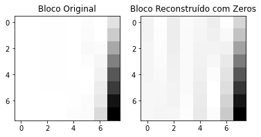
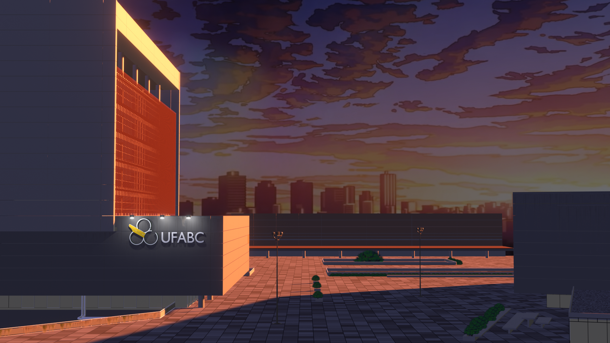

Atividade 2
Atividade 2
Codificação de imagens por DCT :
Nessa parte do relatório, exibimos as imagens que foram codificadas pela transformada DCT no Colab.
Para a realização dessa parte do laboratório, seguimos os procedimentos descritos no Colab, os códigos podem ser acessados através do link:
https://colab.research.google.com/drive/1_Rt1OPBNW6MurnOl4kn87TpsQpTwbFwX?authuser=2
As fotos mostram os integrantes Beatriz, Caleb, Gabriel e Vitor, respectivamente e por fim a foto do grupo inteiro.
Imagens com cores trocadas (BGR) e reais (RGB):
Primeiramente a imagem foi separa em canais e depois re-arranjada para formar uma imagem BRG e outra imagem RGB.
Análise de resultados: Na imagem RGB (vermelho-verde-azul) o canal vermelho é o primeiro byte (menos significativo) na memória, seguido de verde e, em seguida, azul.
Essa é a imagem real, como estamos acostumados a ver, já na imagem BRG (azul-vermelho-verde), os canais de cores estão na ordem oposta, apresentando assim, um tom
mais azulado do que estamos acostumados, o que foi bem perceptível nas imagens geradas


Imagens nos formatos YCrCb e HSV:
Com as componentes da imagem BGR foram criadas as imagens nos formatos YCrCb e HSV. As fotos aparecem na seguinte ordem, RGB, YCrCb e HSV.
Análise de resultados: A imagem YCrCb, se caracteriza pelos componentes brilho (Y), crominância vermelho (Cr) e crominância azul (Cb), pudemos notar no resultado, que se
comparado com o RGB, percebe-se um tom mais avermelhado por causa de suas crominâncias.
Já a imagem HSV, é composta pela tonalidade, que verifica o tipo de cor, abrangendo todas as cores do espectro, desde o vermelho até o violeta, pela saturação, que quanto
maior, mais tom de cinza aparecerá na tela e pelo brilho, no resultado se comparado com o RGB, percebe-se uma imagem meio distorcido, quase como um negativo de foto.


Imagens com separação das camadas RGB individualmente:
Aqui mostramos as imagens com separação das camadas RGB, em primeiro a camada R, seguida pela camada G e por fim a camada B.
Análise de resultados: Em cada camada verificamos a prevalência de sua respectiva cor, sendo o vermelho (R), verde (G) e azul (B), já que as demais componentes foram retiradas.


Imagens com separação dos canais YCbCr:
Apresentamos aqui em ordem as imagens RGB (original) e as componentes do YCbCr, sendo Y, Cr e Cb, respectivamente.
Análise de resultados: A imagem YCrCb, se caracteriaza pelos componentes brilho (Y), crominância vermelho (Cr) e crominância azul (Cb), assim, percebemos nas imagens que a
componente Y apresenta tons de cinza, que representa o brilho, a componente Cr destaca os tons de vermelho presentes na foto, ficando esverdiado em seu restante e a
componente Cb destaca os tons de azul presentes na foto, ficando esverdiado em seu restante, porém em nossas fotos originais o azul não estava muito presente.


Imagens comprimidas com perdas:
Apresentamos as imagens na seguinte ordem, RBG original, seguida pela imagem com parâmetro igual a 25 e por fim com parâmetro igual a 05.
Análise de resultados: A compressão afeta a qualidade da imagem, sendo controlada pelo parâmetro IMWRITE_JPEG_QUALITY entre 0-100, sendo que quanto maior, melhor a qualidade.
É possível notar que com o parâmetro 25 a imagem apresenta uma certa distorção e perda da qualidade, mas que se assentua bem mais com o parâmetro igual a 05.





Transformada discreta cosseno:
Nesta parte calculamos a DCT em bloco de 8x8 da imagem da bola.
As imagens são apresentads na seguinte ordem, jogador com a bola, seguido pelo bloco original e por fim o bloco reconstruído com zeros.
Análise de resultados: Primeiramente escolhemos um pedaço da imagem BOLA para depois fazer o calculo da DCT, notamos que com o bloco reconstruído com zeros a imagem apresenta
mais tons de cinza em algumas colunas que antes eram brancas.


Animação :
Nessa parte do relatório, exibimos as imagens que foram animadas com a utilização do Blender.
Animação 3D como se fosse 2D:
Análise de resultados:

Animação 3D:
Análise de resultados: